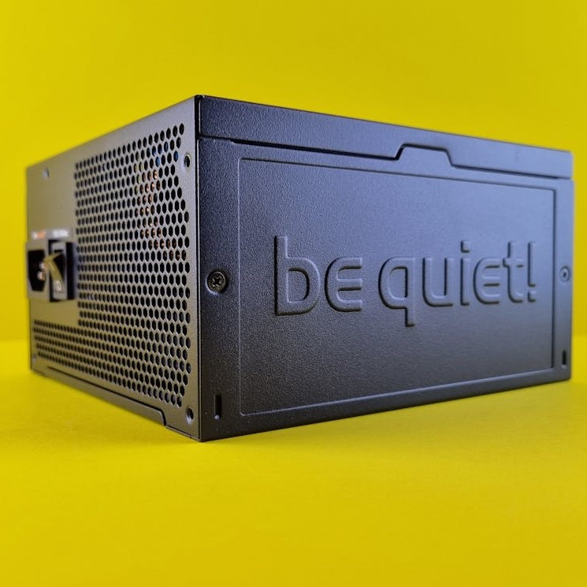

<!DOCTYPE html>
<html lang="en"></html>
<head>
    <meta charset="UTF-8">
    <meta name="viewport" content="width=device-width, initial-scale=1.0">
    <title>Document</title>
    <link rel="stylesheet" href="style2.css">
</head>
<body>
    
  <div id="wrapper">

        <header>

          <a href="index.html"> 
            <button type="button" class="block">  
              
            </button>
          </a>

        </header>
        <nav>
        <h2>

            <div class="dropdown">
              <button class="dropbtn">Meny</button>
              <div class="dropdown-content">
                <a href="chassi.html">Chassi</a>
                <a href="cpu.html">CPU</a>
                <a href="grafikkort.html">Grafikkort</a>
                <a href="hårddisk.html">Hårddisk</a>
                <a href="moderkort.html">Moderkort</a>
                <a href="nätaggregat.html">Nätaggregat</a>
                <a href="ram-minne.html">Ram Minne</a>
              </div>
            </div>

            <div class="dropdown">
              <button class="dropbtn2">Mycket skit</button>
              <div class="dropdown-content">
                Mycket för syns skull
              </div>
            </div>

            <div class="dropdown">
              <button class="dropbtn3">Mer skit</button>
              <div class="dropdown-content">
                Mer för syns skull
              </div>
            </div>

            <div class="dropdown">
              <button class="dropbtn4">Mest skit</button>
              <div class="dropdown-content">
                Mest för syns skull
              </div>
            </div>

         </h2>
        </nav>  
        <aside></aside>
        <main>
          <h3>
Nätaggregatet (Också kallat PSU, Power Supply Unit) är det som ger datorn sin el. Den omvandlar elen i
vägguttaget (oftast växelström) till likström. Nätaggregatet är väldigt viktigt för att datorn ska få rätt 
spänning till komponenterna. I Sverige ligger våra vägguttag på 230V. Den konverterar den spänningen till 12V,
5V och 3V. Olika spänning används till olika komponenter, så t.ex. grafikkort använder främst 12V medan
3V används för olika saker på moderkortet. 
<p>
Nätaggregatet blir varmt när den omvandlar ström, så den innehåller oftast en eller flera fläktar. Fläktarna 
är viktiga så att den inte överhättas. Några högpresterande nätaggregat använder passiv kylning för att 
hålla ner temperaturen. Den passiva kylningen hjälper till att hålla volymen nere. Volymen av fläktarna är 
ett problem på många datorer, så om man kan hindra ljuded från nätaggregatet är det väldigt bra. 
</p>  
<p>
Det är viktigt att välja en PSU med bra kvalité. Annars kan olika komponenter gå sönder. Om komponenterna får
för lite ström leder det till att komponenterna inte kommer att fungera korrekt, eller att datorn inte startar
alls. Har man för hög spänning kan det leda till långvariga skador på datordelarna. En PSU med dålig kvalité
kan också ha spänningssvängningar. Det ger komponenterna skador och kan krascha datorn. PSU:s med låg kvalité
har oftast en mindre effektivitet och därmed en större värmeutveckling. Det betyder att man måste ha fler 
fläktar eller andra kylningsystem för att den inte ska överhettas.  
</p>
<p>
En sak att lägga till är att man inte får greja med PSU på grund av att det är en högspänningspryl. Då måste
ett proffs greja med den.
</p>
          </h3>
        </main>
        <footer></footer>
        
  </div>
    
</body>
</html>